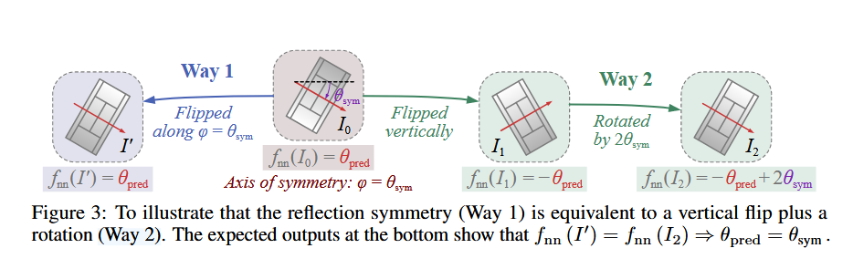
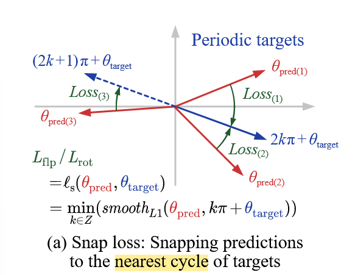

《H2RBox-v2: Incorporating Symmetry for Boosting Horizontal Box Supervised Oriented Object Detection》阅读笔记
简介
对比起上一个版本，H2RBox-v2 运用了对称性实现 SS 分支，优化了检测器的方向预测性能。同时略微修改了 WS 分支，使它能够运用旋转数据增强和更好应对角度周期性。
背景
H2RBox 已经能做到比较好的水平框到旋转框的效果。但是遗憾的是，它还是比较依赖训练数据的样本量和精确度。
实现
SS 分支
SS 分支的原理
首先，我们设计一个神经网络fnn，它输入一个图像I后，会输出一个实数（角度）θ。我们目前并不知道这个网络是有什么用的。
然后我们要求这个网络具备两个性质：
- 翻转一致性
fnn(I)+fnn(flp(I))=0
翻转之后，网络会输出相反数。
- 旋转一致性
fnn(rot(I,R))−fnn(I)=R
rot(I,R) 表示把I 旋转 R。
网络得到这两个性质之后：
假设我们有一个图片I0，设它的对称轴和水平方向的锐角夹角为θsym，把它塞进这个网络后，得到结果θpred。
我们把它沿着对称轴翻转，得到I′，但其实它并没有任何变化。所以fnn(I0)=fnn(I′)=θpred。
我们把它沿着纵向翻转，然后顺时针旋转2θsym，得到I2。这个时候它的输出是fnn(I2)=−θpred+2θsym。

这两个图像是一样的。所以我们有：
θpred=−θpred+2θsym⇒θsym=θpred
因此，我们只要训练出具有上面两条性质的网络，就可以让这个网络输出对称轴的角度，也就是目标的方向。这个利用两条损失函数控制网络就可以做到。
这里其实是忽略了角度周期性的。后续在设计损失函数的时候会处理。
结构
把原始图像翻转和旋转之后，分别输入共享的 backbone 和 neck，预测角度。
这里的角度使用了 PSC 编码消除角度周期性。然后再计算角度之间的翻转一致性损失和旋转一致性损失，加权相加即可。
PSC 编码使用了三个余弦值来编码角度。因为余弦函数是连续函数，所以通过特殊的方式编码后，不会有边界不连续问题和正方形目标问题（预测的值是余弦函数值）。同时相比起离散编码来说检测精度更高。
WS 分支
总体和前身一样，但是多了两个改进：
- 删除了角度预测。因为 SS 分支已经提供角度预测了。
- 前身是先计算水平外接矩形再计算它和水平框 GT 的 IoU Loss，这样它本身就不可以进行旋转增强（因为旋转会让 GT 变成非水平框）。因此作者提出了新的损失函数解决这个问题。

损失函数
总损失为两个分支的加权和：
Ltotal=Lws+μssLss
SS 分支
为了解决角度周期性问题，我们使用 snap loss 来计算 flp 和 rot 视图的损失。snap loss 定义如下：
ℓs(θpred,θtarget)=k∈Zmin(smoothL1(θpred,kπ+θtarget))

从视觉层面来解释，预测框在一个方向远离目标框的时候，实际上是在另外一个方向接近目标框。所以找到和预测出来的框最“接近”的那一侧，来计算损失。
Lflip=ℓs(θflip+θ,0)
Lrot=ℓs(θrot−θ,R)
总损失为两者的加权和。
Lss=λLflip+Lrot
WS 分支
和上面提到的一样，我们令
Lbox=ℓp(Bpred,Bgt)=−lnBproj∪BgtBproj∩Bgt
于是该分支的损失为：
Lws=Lcls+μcnLcn+μboxLbox